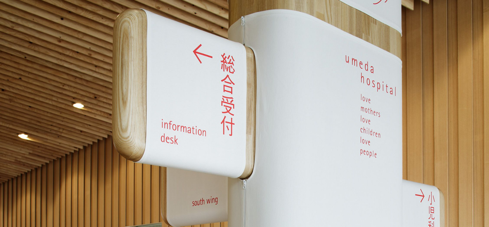

“
인간에 대한 배려가 깃든 디자인을 하는 것이 중요하다.
”
‘청결함을 디자인할 수 있는가?’에 대한 물음에서 시작된 우메다 병원의 사이니지 디자인은 세계적인 디자인 거장 중 한 명인 ‘하라 켄야’의 작품이다. 일반적으로 사용되는 플라스틱 대신
오염되기 쉬우며 관리가 어려운 흰 천을 오히려 병원에 사용함으로써 마치 호텔의 침구류나 레스토랑의 식탁보와 같은 청결함과 신뢰를 주도록 고안하였다. 특히 설치물과 사인물의 모서리를 라운드
처리하고, 흰 천 위에 붉은 색으로 프린팅하여 시인성을 높이면서도 위생적이고 안전한 심리적 경험을 선사한다. 천들은 언제든 교체가 용이하며, 일반적으로 6개월에 한 번씩 세탁을 한다고
한다.
[우메다 병원의 사이니지 시스템 (출처: mdesign.designhouse.co.kr)]
